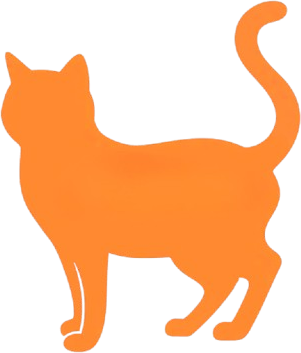

The Montréal CatWalk
Between the traffic and the noise, Montréal has hidden places where the non-human world takes over. This map leads you to them one cat at a time, through green alleys and gardens, with somewhere to drink and cool down when the city gets too hot!
This map is for Montrealers who need a break from the noise and want a short nature walk close to home, no car or trip to the mountain required.
City dwellers are about 39% more likely to experience mood disorders like depression, and 21% more likely to have anxiety disorders, than people in rural areas. A cat, a garden, or a quiet space won’t fix that, but they’re a good place to start.
What you can do here: Find a cat near you and click it to meet them. Then switch on the green alleys, community gardens, water fountains and free air-conditioned places, and plan a wandering walk from one cat to the next. Maybe stop for water along the way.

Cats- Green alleys, by distance to the nearest cat:
- under 100 m
- 100 to 249 m (under 3 min walk)
- 250 to 499 m (under 6 min)
- 500 to 999 m (under 12 min)
- 1 km or more
- Water fountains
- Communal gardens
- Free AC (cool places)
- Suggested walk
Loading cats…
See every cat in the photo gallery
Suggested walks
Not in this iteration
There are no suggested walking routes yet. Eventually a set route from a starting point of the user’s choice would be cool… or a collaborative aspect.
Where this comes from
- Cat photos: my own, taken around Montréal.
- City and mental health statistics: Nature can have a nurturing effect on your mental health, Centre for Addiction and Mental Health (CAMH), published 8 July 2016, © CAMH, accessed 19 October 2026.
- Ruelles vertes (green alleys), Ville de Montréal, CC BY 4.0, accessed 23 September 2026. The city updates this dataset every autumn.
- Jardins communautaires (community gardens), Ville de Montréal, CC BY 4.0, accessed 30 September 2026.
- Fontaines à boire extérieures (outdoor drinking fountains), Ville de Montréal, CC BY 4.0, accessed 30 September 2026.
- Lieux publics climatisés (air-conditioned public places), Ville de Montréal, CC BY 4.0, accessed 30 September 2026.
- Base map: © OpenStreetMap contributors, ODbL.
- Cat paw animation on the gallery page: White paw GIF, via Tenor, accessed 21 October 2026.